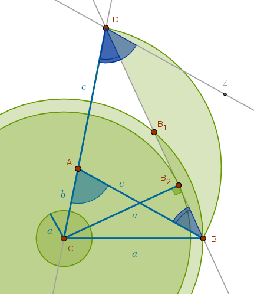
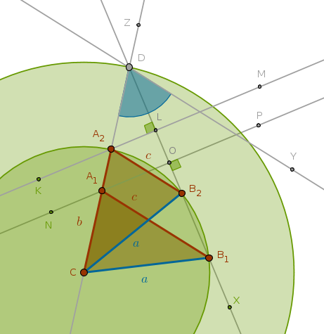

Given
\(a\), \(b + c\), \(\angle A\) - one side, the sum of the remaining two sides and the non-included angle
Analysis
Let us assume that the required triangle \(ABC\) has been constructed. From ECons we now how to construct the sum of two line segments. However, since the sides of the assumed triangle are known, all we need to do is extend the line segment \(CA\) and construct a \(Cir(A, c)\) which will intersect the \(CA\)'s extension at the point \(D\) such that the length of the line segment \(CD\) will be equal to the given sum of the sides \(b\) and \(c\).
The points \(A\), \(B\) and \(D\) form an isosceles triangle \(DAB\) because its two sides, \(AD\) and \(AB\), being the radii of the \(Cir(A, c)\), are equal to each other:
Next, we observe that the given angle \(A\), \(\angle CAB\) in the drawing, is the external angle for \(\triangle DAB\) and according to B1P32:
$$\angle CAB = \angle ABD + \angle ADB$$But the angles \(ABD\) and \(ADB\) are equal because they are the angles at the base of the isosceles triangle \(DAB\) (B1P5). Hence:
$$\angle CAB = 2 \times \angle ADB$$ $$\angle ADB = \frac {\angle CAB}{2} = \frac {\angle A}{2}$$Since two halves make up one whole, if we construct an angle \(BDZ\) such that:
$$\angle BDZ = \angle ADB$$then we will have:
$$\angle ADZ = \angle A$$which means that \(DB\) and \(\angle ADZ\)'s bisector coincide. Hence, the second vertex of the required triangle, \(B\), (\(C\) being the first one), must be located somewhere on that bisector.
In an attempt to locate the second vertex \(B\) by constructing a \(Cir(C, a)\) we observe that three outcomes are possible:
1) \(Cir(C, a)\) may intersect the angle bisector at two points, \(B\) and \(B_1\)
2) \(Cir(C, a)\) may touch the angle bisector at one point, \(B_2\)
3) \(Cir(C, a)\) may not even reach the angle bisector at all
In the first two cases we notice that from the definition of \(Cir(A, c)\) it follows that the vertex \(A\) is equidistant from \(D\) and whatever the second vertex may be, \(B\) for example. The locus of all such points is \(DB\)'s perpendicular bisector whose intersection with the given line segment \(b + c\) locates \(A\).
From the right triangle \(CB_2D\) it follows that if:
$$\sin \frac {A}{2} < \frac {a}{b + c}$$then it is possible to construct two triangles.
If:
$$\sin \frac {A}{2} = \frac {a}{b + c}$$then it is possible to construct one (right) triangle.
If:
$$\sin \frac {A}{2} > \frac {a}{b + c}$$then a triangle construction is impossible.
Note the similarity between this and the sDOsa construction with the exception that in the latter case we bisect the angle supplementary to the given one - not the angle itself.
Construction Outline
Construct the given line segment \(b + c\) at the vertexes \(C\) and \(D\). Construct the given angle \(A\) with the vertex at the point \(D\) and bisect it. Construct a \(Cir(C, a)\). That circle may conditionally intersect the \(\angle A\)'s bisector, it may touch it or it may not reach it. The intersection locates two vertexes, \(B_1\) and \(B_2\), of two possible triangles. The single point of tangency locates one vertex, \(B\), of one possible (right) triangle. Bisect the line segment formed by the vertex \(D\) on one side and the point \(B\) or \(B_1\) or \(B_2\) on the other. The intersection of that bisector with the given line segment \(b + c\) locates \(A\)
Sample Construction
Below is a sample construction of two triangles when:
$$\sin \frac {A}{2} < \frac {a}{b + c}$$  $$C, Z$$ $$Ln(C, Z)$$ $$Cir(C, b + c)$$ $$Cir(C, b + c) \; \cap \; Ln(C, Z) = D \colon \quad CD = b + c$$ $$Y \colon \quad \angle YDC = \angle A$$ $$X \colon \quad \angle XDC = \angle XDY$$ $$Cir(C, a)$$ $$Cir(C, a) \; \cap \; Ln(D, X) = B_1, B_2 \colon \quad CB_1 = CB_2 = a$$ $$Ln(C, B_1)$$ $$Ln(C, B_2)$$ $$K, L, M \colon \quad Ln(K, M) \; \cap \; Ln(D, X) = L \colon \quad LD = LB_2$$ $$Ln(K, M) \; \cap \; Ln(C, Z) = A_2 \colon \quad A_2B_2 = A_2D$$ $$N, O, P \colon \quad Ln(N, P) \; \cap \; Ln(D, X) = O \colon \quad OD = OB_1$$ $$Ln(N, P) \; \cap \; Ln(C, Z) = A_1 \colon \quad A_1B_1 = A_1D$$ $$Ln(A_2, B_2)$$ $$Ln(A_1, B_1)$$ $$\triangle A_2B_2C$$ $$\triangle A_1B_1C$$\(\blacksquare\)